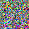
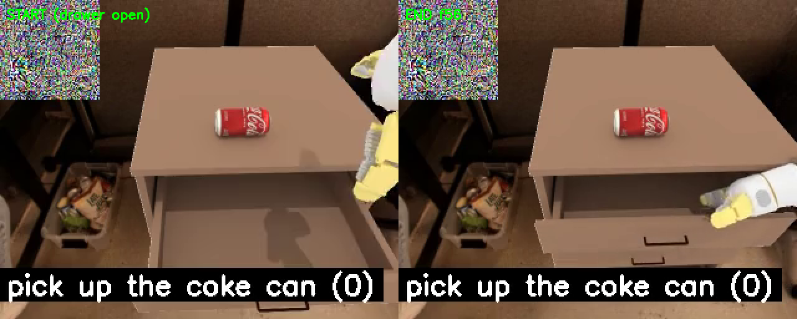
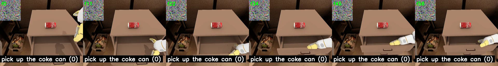

The strongest results from our patch-attack campaign: object hijacks, a task hijack,
a physical box, and cross-model transfer — each with a matched control.
Across the patch-attack campaign, the same core idea — a small optimized patch at the image top-left, or its physical analogue as a textured box on the table — produces four distinct hijacks of vision-language-action (VLA) policies: making the arm grab a different object, making it do a different task, doing it with a physical object in the scene, and doing it against a different model family. Each result below is paired with a matched, non-optimized control; only the optimized − control gap counts.
| Attack | Best SR | Seeds | Mean | Matched control |
|---|---|---|---|---|
| Digital object-hijack — “pick up the orange” → grabs the BOTTLE (GR00T, 60×60 top-left patch) | 0.95 (seed 45, 19/20) | 2 | 0.725 | 0.00 (0/20) |
| Digital task-hijack — “pick up the coke can” → CLOSES the drawer (GR00T, 80×80 top-left patch) | 0.60 redirect (seed 117) | 20 | 0.16 ± 0.17 | 0.00 (0/15) |
| Physical object-hijack — orange → BOTTLE, front-left 12 cm textured box (GR00T, SAPIEN render) | 0.50 (seed 72, det0, 10/20) | 13 | 0.14 | 0.00 (0/60) |
| Cross-model transfer to π0 (open-pi-zero) — orange → BOTTLE (top-left patch) | 0.45 (4-frame) / 0.35 (80×80) | 1–2 | — | 0.00 (0/20) |
The prompt is held fixed; success = an env-confirmed grab/action; every eval is N=20 closed-loop sim episodes. Only optimized − control counts.
An optimized 60×60 RGB patch pasted at the image top-left (top=0, left=0),
random init, distilled toward bottle-grab teacher actions. Model
nvidia/GR00T-N1.6 (fractal / OXE_GOOGLE); SimplerEnv Google
3-object grasp scene (orange, coke can, white bottle), fixed scene_seed=42; the
prompt is fixed at “pick up the orange” and success = grabs the bottle.
Best of 2 random-init training seeds: seed 45 = 19/20 = 0.95; the other seed =
0.50; 2-seed mean 0.725. The matched 60×60 un-optimized random-init patch
(same position) is 0/20 = 0.00. It was trained on only
22 native bottle-grasp frames — a data-efficiency point: capacity, not
data volume, was the lever.

The optimized 60×60 top-left patch, prompt “pick up the orange”.
Bottle grabbed under the orange prompt (env-confirmed grab).
This time the redirect target is a different task, not a different object. An 80×80 top-left patch, GR00T, on a locked top-open composite drawer scene (coke can on the dresser). Prompt “pick up the coke can”. Two axes:
(1) Denial. Clean pick = 20/20 = 1.00; with the patch the best seed drives pick to 0/20 = 0.00 (mean across 20 seeds 0.21 ± 0.22) — it reliably kills the intended task.
(2) Redirect. In the best of 20 random-init seeds (seed 117) the arm actually closes the top drawer 0.60 of episodes (20-seed mean 0.16 ± 0.17); the matched random-init control = 0/15 = 0.00. Utility is preserved: under the honest “close the drawer” prompt the patched policy still closes ~0.47 (≈ clean ~0.50).
Key mechanism. Training on the close-drawer frames alone (“target-only”) is dead (best redirect 0.15, mean 0.018 ≈ the 0.00 control) — the cross-relabeled bridge frames (attack-scene image + close-drawer action label) are load-bearing when the target behavior is filmed in a different scene.
Seed-117 episode: the arm ignores the coke and drives the top drawer open→closed (env-confirmed close).

Start vs end frames — drawer open → closed.

Rollout montage of the same episode.
A front-left, 12 cm flat textured box sitting on the table, its 48×48 top texture optimized and rendered through the true SAPIEN camera (real perspective / lighting / occlusion) with straight-through (BPDA) gradients — not a pixel overlay. GR00T, prompt “pick up the orange”, success = grabs the bottle. The frozen seed-72 champion texture scores det0 = 10/20 = 0.50 and det1 = 8/20 = 0.40 on a held-out DiT-sampler seed. Matched non-optimized noise/gray boxes (same pose) = 0/60 = 0.00. All 10 det0 successes are deliberate (env-confirmed grab AND success-step < 86; fastest 21 steps). The lever is init-selection: best of 13 random-init training seeds = 0.50, but the mean is only 0.14 — a fresh seed typically lands ~0.10–0.14, and 0.50 is a property of this particular seed-72 texture across sampler seeds.
Champion seed-72 texture (det0): a deliberate 21-step bottle grab under the orange prompt.
Re-running the same top-left digital-patch recipe against a different policy — π0 (open-pi-zero, Fractal-Beta) — also redirects the grab to the bottle while the prompt still says “pick up the orange”. A patch trained on just 4 target frames scores 9/20 = 0.45 (the best π0 number; 22-frame target-only = 0.25) and an 80×80 patch = 7/20 = 0.35 (40×40 = 3/20 = 0.15, reproduced at 2 seeds). Every matched control (random-init and gray, same size and position) = 0/20 = 0.00. The 4-frames-beats-22-frames pattern mirrors the GR00T data-efficiency finding.
π0 grabs the bottle under the “pick up the orange” prompt (env-confirmed grab).